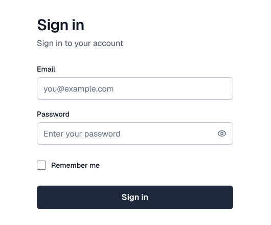
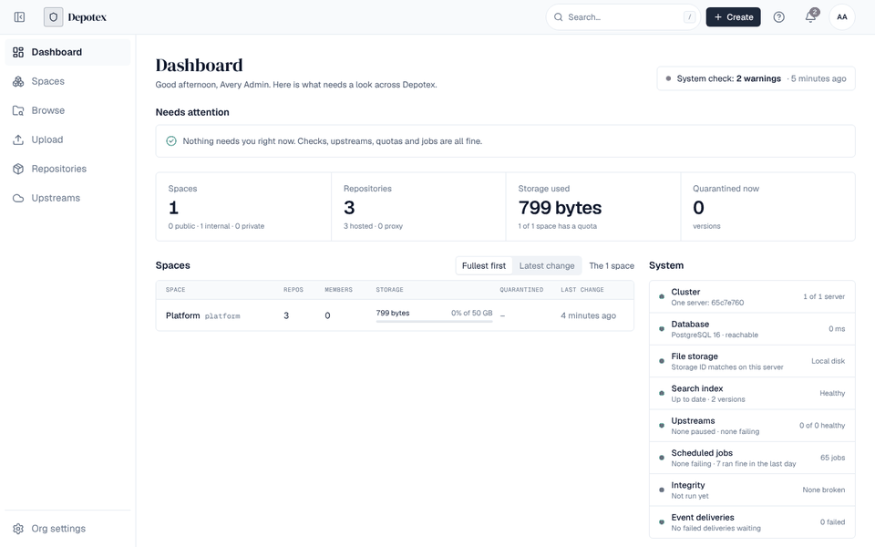
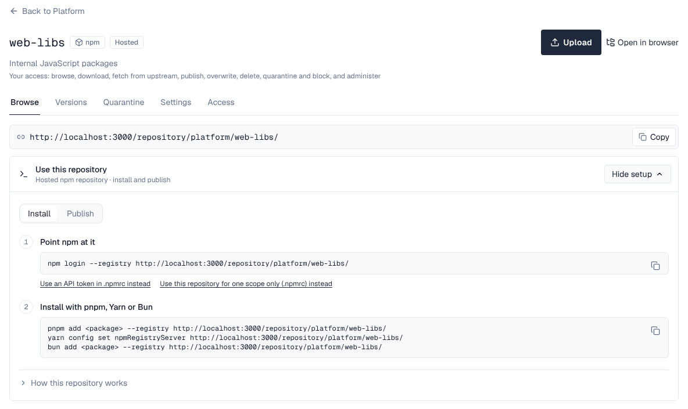

This page is for people who use Depotex: developers, CI pipelines and anyone who downloads or publishes packages. It takes about ten minutes. If you install or run Depotex, start with the Admin guide instead.
Looking for how to install Depotex, the setup wizard or the reverse proxy? They moved to the admin guide: Install Depotex, Setup wizard and Set up without the UI.
1. Sign in

Open the address your administrator gave you (for example https://depotex.example.com). Sign in with your email and password, or with your company's single sign-on when the page shows a button for it. Remember me keeps you signed in on this browser for longer. If you were invited, the email has a link to set your password first.
After signing in you see the Dashboard: recent activity, what needs your attention, and the spaces and repositories you use. The search box at the top (Ctrl+K or /) finds spaces, repositories and artifacts from any page; see Search.
2. Find a repository
Packages live in repositories, grouped in spaces (usually one per team or product). Open Spaces in the left menu, pick a space, then its Repositories tab and a repository. Browse in the left menu searches every artifact you can see instead.

The repository page shows its address, what you may do in it (Your access), and its packages. Ask the space's owner for access if a repository you need isn't listed; see Spaces.
3. Point your package manager at it
Open Use this repository → Show setup. It shows the exact commands for that repository and format, ready to copy: Install to download packages, Publish to upload them. The address already includes the space and repository.

Package managers sign in with an API token rather than your password. Create one from the profile menu (your initials, top right) → Edit Profile → API tokens → New token, give it only the permissions it needs (for example download for installs, publish for releases) and an expiry. The token is shown once: copy it into your package manager's settings or your CI secret store.
# npm, with the repository from the setup panel
npm config set registry https://depotex.example.com/repository/platform/web-libs/
npm config set //depotex.example.com/repository/platform/web-libs/:_authToken <API token>
npm install @example/design-tokensEvery format has its own page with the full setup, publishing and troubleshooting: Supported formats lists them (Maven, npm, PyPI, Docker, Helm, Go, NuGet, Cargo, APT, YUM, Terraform, Hugging Face, Git LFS, Composer, RubyGems, Conda, Conan and raw files).
4. Publish a package
Publish with your usual tool (npm publish, mvn deploy, twine upload, docker push, …) to a hosted repository you have the publish permission on, or select Upload on the repository page to upload files from the browser. A proxy repository only caches another registry and can't be published to; a group repository sends what you publish to the member its write rules choose (see Repository groups).
The new version appears on the repository's Versions tab and in Browse within seconds, with its files, checksums, dependencies and security status. Depending on your organization's rules it may first be checked or held in quarantine.
5. In CI
- Store the API token as a CI secret, never in the repository. A token can be limited to some network addresses and given an expiry; see API tokens.
- Better: let the pipeline sign in with its own short-lived identity (GitHub Actions, GitLab CI, Kubernetes and others), so no Depotex secret is stored at all. Your administrator sets this up as workload identity.
- Command-line tools that support it can sign in in the browser instead (device sign-in), see OAuth applications.
6. What next
| To | See |
|---|---|
| Understand spaces, roles and who can do what | Spaces |
| Look inside a version: files, dependencies, vulnerabilities, SBOMs | Browse artifacts, SBOMs & vulnerabilities |
| Know why a download is refused | Quarantine, Block list |
| Get alerts and change your theme, language or notifications | Alerts, Profile |
| Automate with the API | API tokens, Events |
| Stay informed about security fixes | Security advisories (with an RSS feed) |
The ? menu at the top of every page links back here, to what's new and to support. Your administrator may point it at your own help desk.